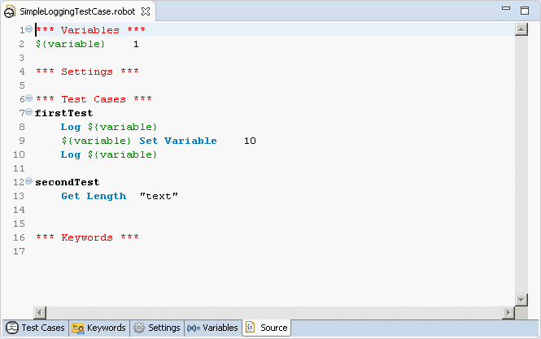
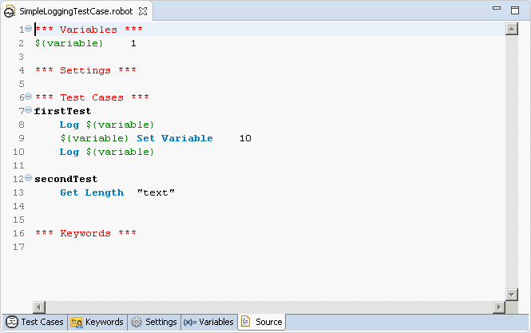
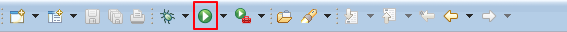

Window -> Perspective -> Open Perspective -> Other... -> RobotAll RED activities are performed within 2 perspectives: Robot, Debug. Former one is used to construct and execute tests, later one is for debugging test-cases. To start working with RED, you should activate Robot perspective first.
Window -> Perspective -> Open Perspective -> Other... -> Robot
Workspace stores all global Eclipse & Red preferences. If it not set previously, Eclipse will show dialog to set path.
User can always switch workspaces, and if necessary, perform projects import from locations outside of current workspace.
Switching Workspace is done by menu action: File -> Switch Workspace
Project is an equivalent to folder in OS, it stores files and settings relevant to a group of files.
In order to work with RED, Robot Project has to be created.
Creating new Project can be done by:
File -> New -> Robot Project (item can be found also under selection New -> Project... -> Robot Framework -> Robot Project)
To create sample test you should invoke action: File -> New -> Other... -> Robot Framework -> Robot Test Suite. Same action can be accessed by right click menu.
Double click on file in Project Explorer will open file's editor.
RED consists of 2 different modes of editing: a Table (Ride-like style) and Text style.
At the bottom of opened editor, there are list of tabs.Rightmost opens text editor(Source),others are for Table syles.
By default Source editor is used when Test Suite file is opened.
 Source view displays text representation of all table views:

Source view displays text representation of all table views:

Just like other modern Developments Environments, RED supports content assistance/code completion. When editing tab or item in text editor, press CTRL+SPACE keys to activate hints for robot keywords an variables.
To run TestSuite, Run button needs to be selected or right-click menu on file in Source view. The same action is in right-click menu on file in Project Explorer. 
 In Robot part you can specify which test cases should be run by using either tags or include/exclude list of test cases in active project.
In Robot part you can specify which test cases should be run by using either tags or include/exclude list of test cases in active project.
 To run single test case in test suite, you can select desire test case in Project Explorer and in right-click menu select "Run".
To run single test case in test suite, you can select desire test case in Project Explorer and in right-click menu select "Run".
During TestSuite execution, RED displays RobotFramework console and message logs.
Those information are available in Console and Message Log, by default visible in the Robot perspective or by Window -> Show View -> Other... -> Robot

 If any of those 2 views are missing, best way is to reset perspective settings by using action
If any of those 2 views are missing, best way is to reset perspective settings by using action
Window -> Perspective -> Reset Perspective...
Window -> Show View -> Robot -> Execution View